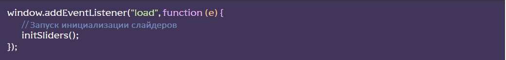

[HTML] Существует два сниппета для построения HTML-структуры слайдера:
- swiper – строит минимальную структуру с уже добавленными классами слайдера (для более опытных)
- swiperfull – строит полную структуру слайдера с добавлением всех возможных элементов управления (кнопки «влево/вправо», скролл, пагинация (булеты)) с уже добавленными классами слайдера. Весь код сопровождается комментариями (для новичков).
[JS] В файле js/app.js раскомментировать строку import “./files/sliders.js”;
В файле js/files/sliders.js выполняется подключение самого слайдера «Swiper» из NPM пакета (подключено по умолчанию)

При необходимости, можно подключить больше нужных модулей

Полный список модулей - тут
Также, ниже по коду, есть пример-подготовка для создания конкретного слайдера (функция initSliders();) Тут мы создаем и настраиваем нужные нам слайдеры, не забываем указывать модули для конкретного слайдера:

Информацию по настройке смотри в документации на сайте слайдера.
Инициализация слайдера(ов) initSliders(); происходит после полной загрузки страницы ниже по коду:
[SCSS] По умолчанию, в файле js/files/sliders.js подключены базовые, минимально необходимые для работы, стили слайдера import “../../scss/base/swiper.scss”; (для более опытных). Также есть возможность подключить (расскоментировав строку) полные стили слайдера из файла scss/libs/swiper.scss или из пакета import ‘swiper/css’; (для начинающих)